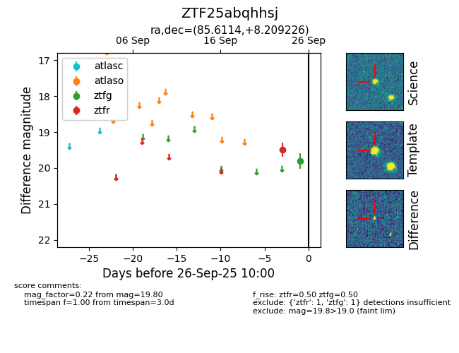

FINK: ZTF25abqhhsj
Lasair: ZTF25abqhhsj
ALeRCE: ZTF25abqhhsj
ZTF25abqhhsj (ztf,fink)
equatorial (ra, dec) = (85.6114,+8.20923)
galactic (l, b) = (197.5018,-11.30763)

last ztfg=19.80, ztfr=19.50
1 ztfg, 1 ztfr detections